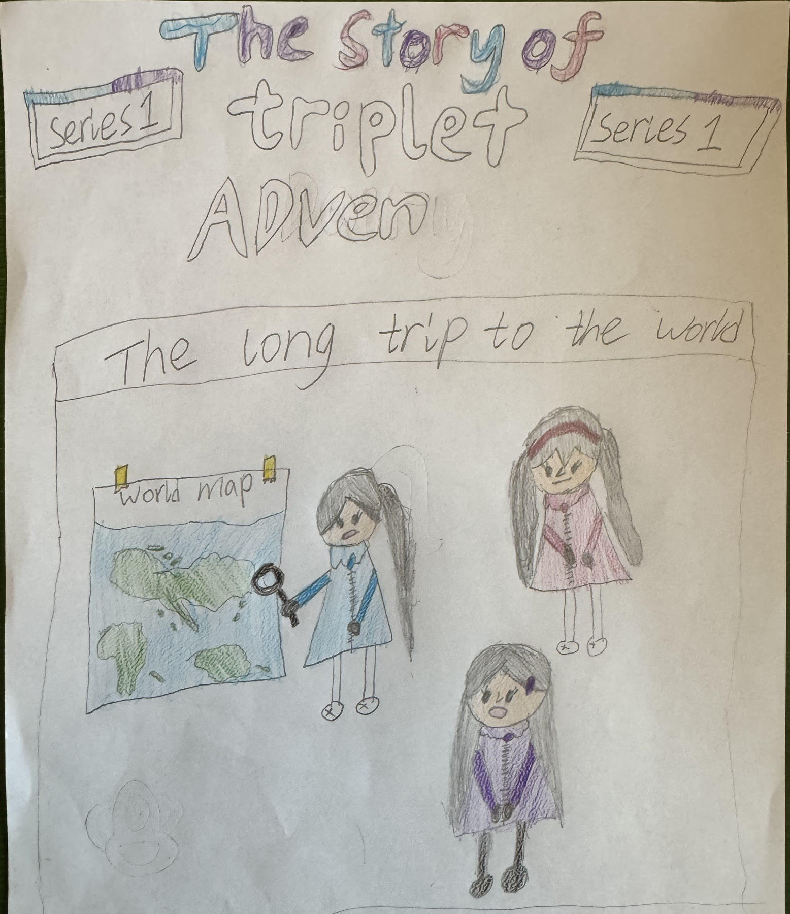

See Yimei’s original page

Written and illustrated by Yimei Chen

This digital edition displays Yimei’s drawings as photographed. Tap Read it for a clear, lightly edited transcription; the original handwriting always remains available.